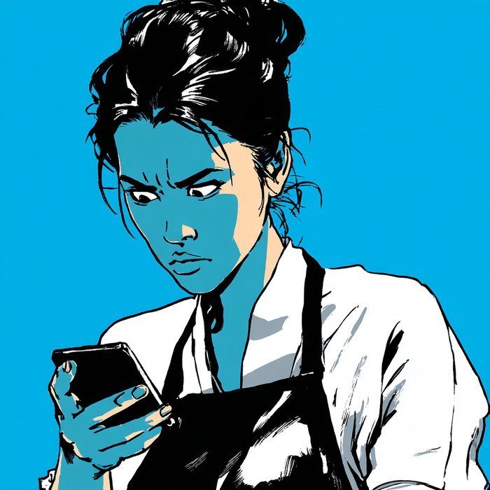

PC・ネットワークの
“困った”
を
PCが
起動しない
、
遅い
！
ウイルス
に感染したかも？
アップデート
後、なんか変？
ネット
が繋がらない、遅い！
メール
が送れない！
印刷
ができない！
解決

?!
KOKORO IT
の
PC・ネットワーク
保守
サポート
電話
サポート
リモート
サポート
訪問
サポート
パソコン整備士
の資格をもつスタッフが、状況に合わせて対応します。
PC担当者
がいない
中小企業さま
に、おすすめです。
そもそも、どこに
頼めばいいか分からない
トラブルのたびに、
費用がかかっている
いまの保守契約の
金額を見直したい
そんな悩みも、
まとめて解決
します！
自主制作 / Kinoshita Studio ── 架空の会社です
KOKORO IT ／ 中小企業のIT活用を支えています
0120-000-000